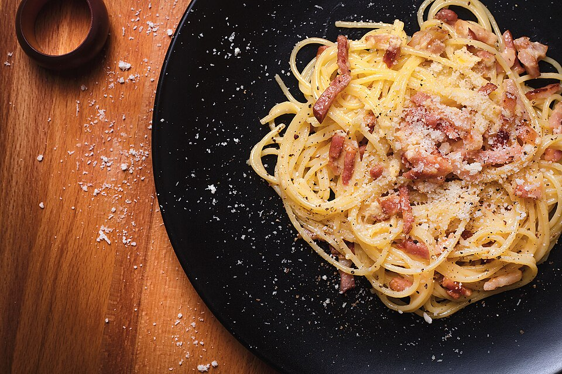

Massas
Espaguete à carbonara

Ingredientes
- 4 colheres (sopa) de azeite
- 500 g de espaguete de sêmola cozido
- 100 g de parmesão ralado
- 1 pote de creme de leite fresco
- Salsinha a gosto e sal
- 300 g de bacon
- 6 gemas
Modo de preparo
- Frite o bacon em 2 colheres de azeite até crocante; escorra em papel e esmigalhe.
- Bata gemas, queijo, creme de leite e sal até esbranquiçar. Cozinhe em banho-maria batendo, sem ferver.
- Acrescente aos poucos o restante do azeite aquecido; junte bacon e salsinha. Misture na massa. Opcional: fatias de bacon torradas por cima.
Observação
Fonte: livretinho Liquigás.